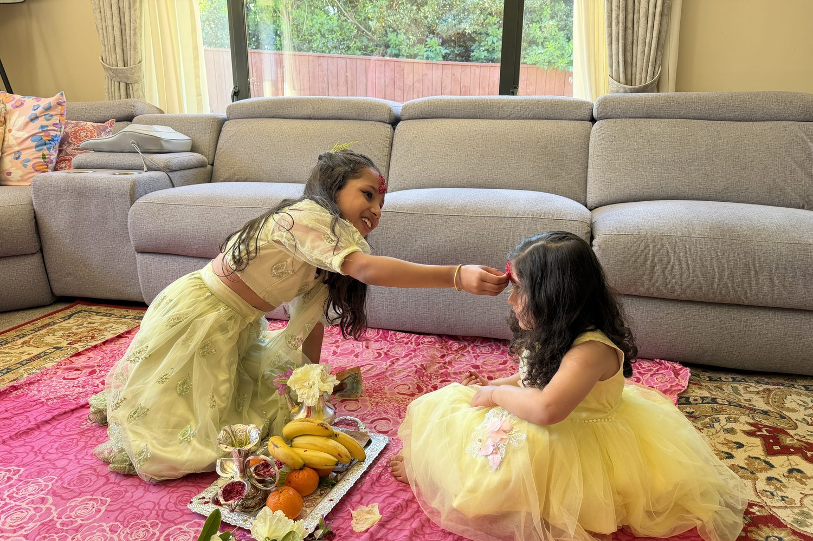
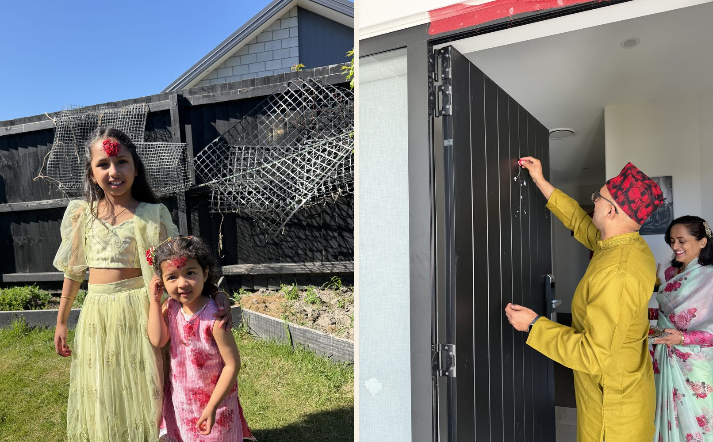

This week our family celebrated Dashain, the biggest festival in the Nepali calendar. Ten days of worship build up to Tika on the tenth day, when elders put the red Tika1 on the foreheads of the younger ones, along with a little jamara2, the yellow barley sprouts that have been growing in the house since the first day, and bless them. Every year it sends my mind back to the same place: a child in Nepal, counting the days.
What Dashain felt like when we were kids
For us, Dashain was a festival of joy, and it started with new clothes. Remember that feeling when you got a new set? You couldn't wait to show it off. You would go around to your friends' houses to show them, and they would come to your house to see yours. "He already got the new clothes" was the news of the neighbourhood.
Then there was the food. There was a lot more of it, and far more variety, than on normal days. The weather helped too. In that part of the world the season was just starting to turn cooler, and the air itself felt different, like something was about to happen.
You could hear it, too. Loudspeakers all over the city played bhajans and mantras. In many communities, people would set up temporary shrines of Goddess Durga (Bhawani), and the worship carried on there day after day, all ten days. You never needed a calendar to know it was Dashain.
My sister Sujata and I pooled our Tika money and bought a VCD player. To watch movies at home. That was a very big deal.
And then came the tenth day. We looked forward to going to our Mama ghar (our maternal uncle's home) for Tika, partly for the blessings, and partly, honestly, for the money that came after. We planned how to spend it long before we got there.
In between, there were cards: Kitty, Marriage, Flash. And there were relatives, because Dashain was when family met family. All of those memories were great.
Two cultures, one house
Now my family celebrates in New Zealand, and things are different. I watch my kids and I can see they are managing two cultures. Sometimes they struggle with it, and sometimes they enjoy it.
Christchurch has been a good place for this. I lived in the US for more than six or seven years as well, but I feel good about raising a family here, and a large part of that is the community.
I especially like how the culture of Tika has carried over. The younger ones go to the elders to take their blessings, and I love that. If you have parents visiting, you are certain to get a lot more traffic through the house, and you won't have time to breathe, and that is something I have really liked. Respect for elders and taking their blessings has always been part of our culture, and I can see it alive here.
What has pleased me most over the last few years is watching the kids take it on themselves. The younger generation forms groups and goes visiting different houses all around the city, to Nepali elders and to each other. They are having fun while they do it. And in the process, they build bonds with each other and pass the culture on.

Yes, there are incentives. After Tika comes dakshina, the money gift, and the kids are not unaware of that. But I've come to see it the way I always did: dakshina is our culture's way of saying thank you.
Gratitude, and keeping busy
I am thankful for the elders who were here before us, who built this community and passed these traditions on to their own children. I am pretty sure our kids will do the same for the ones who come after. That is how culture survives: each generation keeps it going for the next.
I won't pretend that living abroad during a big festival is easy. It isn't. But I have noticed that these small things keep us busy enough: the cooking, the visits, the Tika, the house full of people. They leave little time to dwell on what we would be doing if we were in Nepal. Without them, it would be easy to sulk. With them, Dashain still feels like Dashain, only in a different place.
